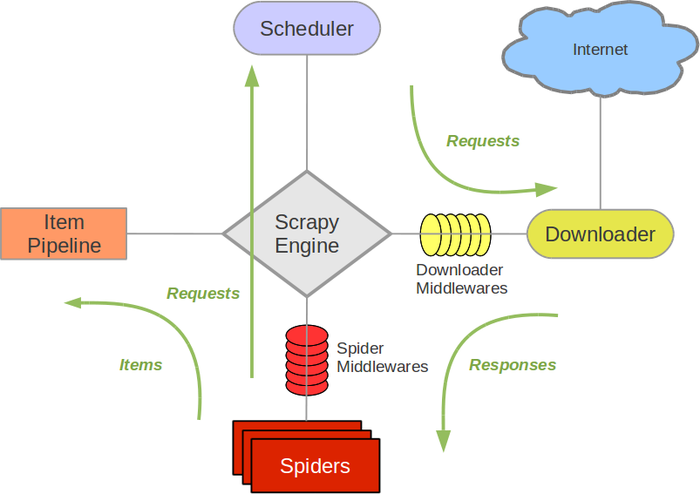

Architecture overview
This document describes the architecture of Scrapy and how its components interact.
Overview
The following diagram shows an overview of the Scrapy architecture with its components and an outline of the data flow that takes place inside the system (shown by the green arrows). A brief description of the components is included below with links for more detailed information about them. The data flow is also described below.
{kind=link}

Components
Scrapy Engine
The engine is responsible for controlling the data flow between all components of the system, and triggering events when certain actions occur. See the Data Flow section below for more details.
Scheduler
The Scheduler receives requests from the engine and enqueues them for feeding them later (also to the engine) when the engine requests them.
Downloader
The Downloader is responsible for fetching web pages and feeding them to the engine which, in turn, feeds them to the spiders.
Spiders
Spiders are custom classes written by Scrapy users to parse responses and extract items (aka scraped items) from them or additional URLs (requests) to follow. Each spider is able to handle a specific domain (or group of domains). For more information see Spiders.
Item Pipeline
The Item Pipeline is responsible for processing the items once they have been extracted (or scraped) by the spiders. Typical tasks include cleansing, validation and persistence (like storing the item in a database). For more information see Item Pipeline.
Downloader middlewares
Downloader middlewares are specific hooks that sit between the Engine and the Downloader and process requests when they pass from the Engine to the Downloader, and responses that pass from Downloader to the Engine. They provide a convenient mechanism for extending Scrapy functionality by plugging custom code. For more information see Downloader Middleware.
Spider middlewares
Spider middlewares are specific hooks that sit between the Engine and the Spiders and are able to process spider input (responses) and output (items and requests). They provide a convenient mechanism for extending Scrapy functionality by plugging custom code. For more information see Spider Middleware.
Data flow
The data flow in Scrapy is controlled by the execution engine, and goes like this:
The Engine opens a domain, locates the Spider that handles that domain, and asks the spider for the first URLs to crawl.
The Engine gets the first URLs to crawl from the Spider and schedules them in the Scheduler, as Requests.
The Engine asks the Scheduler for the next URLs to crawl.
The Scheduler returns the next URLs to crawl to the Engine and the Engine sends them to the Downloader, passing through the Downloader Middleware (request direction).
Once the page finishes downloading the Downloader generates a Response (with that page) and sends it to the Engine, passing through the Downloader Middleware (response direction).
The Engine receives the Response from the Downloader and sends it to the Spider for processing, passing through the Spider Middleware (input direction).
The Spider processes the Response and returns scraped Items and new Requests (to follow) to the Engine.
The Engine sends scraped Items (returned by the Spider) to the Item Pipeline and Requests (returned by spider) to the Scheduler
The process repeats (from step 2) until there are no more requests from the Scheduler, and the Engine closes the domain.
Event-driven networking
Scrapy is written with Twisted, a popular event-driven networking framework for Python. Thus, it’s implemented using a non-blocking (aka asynchronous) code for concurrency.
For more information about asynchronous programming and Twisted see these links: